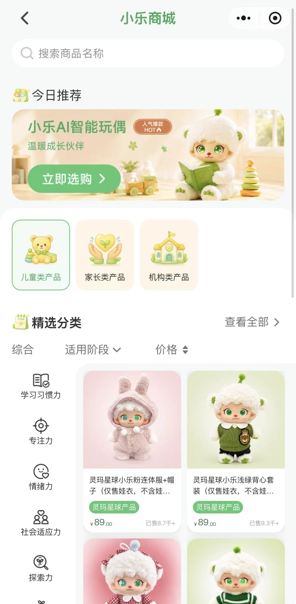
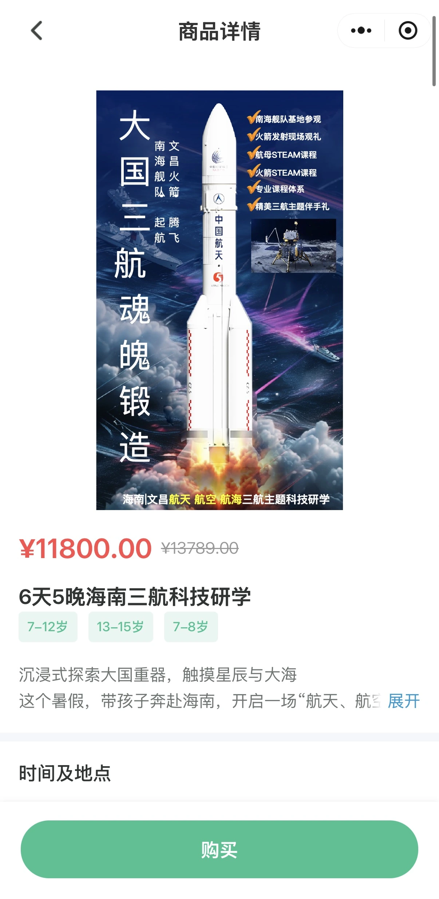
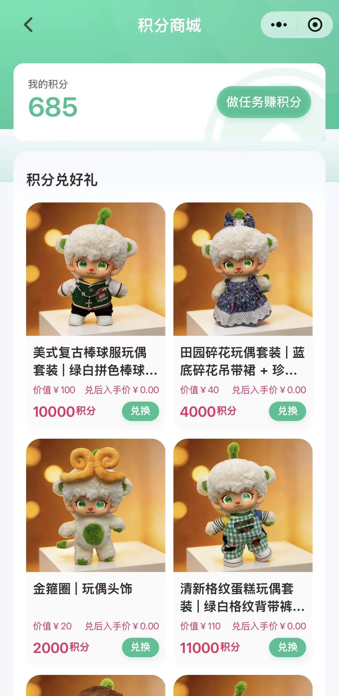

当商业成功被当作教育价值
在教育科技行业，商业成功很容易被当作产品质量的证据。卖得好的产品，看起来可能已经成功满足了用户需求。但工作经历逐渐让我意识到，商业表现与教育价值并不是一回事。
例如，一些成熟品牌的学习设备销量很好。市场表现可能说明家长认可其吸引力，或认为值得购买。但销量本身无法告诉我们，孩子是否通过使用它们更有效地学习。
教育产品可能因为品牌、功能、展示方式、便利性或感知到的教育收益而具有商业吸引力。这些因素可能影响购买决策，却未必证明产品对学习的实际贡献。
这一区别在教育科技领域尤其重要，因为付费者与使用者往往不是同一个人。家长可能负责购买，孩子则是主要用户。因此，促使家长买单的因素，可能不同于让产品对孩子有用或有效的因素。
什么促使家长决定购买
在行业工作期间，我注意到，孩子的偏好有时能成为触发家长购买决策的强大因素。
例如，当孩子非常想要某个产品，而价格又在可接受范围内时，家长可能愿意购买。此时，购买更多由孩子的热情和家长满足其偏好的意愿推动，而非对产品教育效果的详细评估。
这并不意味着家长不关心教育，而是购买决策受到多重考虑影响，教育价值不一定是唯一的决定因素。
这也意味着，购买意愿与教育期待应被分别理解。孩子可能因为产品好看或互动有趣而想要，家长可能因为价格可以接受、产品看起来值得而同意购买。但任何一项决定，都不能单独证明产品支持了有意义的学习。
这让我开始质疑，购买意愿是否应被当作教育价值的证据。一次成功交易说明有人愿意付费，却不能说明孩子从使用中获得了什么。
产品质量是基础，但不能解释一切
另一个重要认识，来自对产品开发与商业执行关系的观察。
产品进入市场的早期阶段，质量极为重要。产品需要达到可接受的标准，兑现核心承诺，销售团队和经销商才能有信心推广。
我在自家的 AI 陪伴玩偶上看到了这一点。当实际体验与市场定位带来的期待不符时，部分经销商感到不满，并停止合作。这说明，产品承诺与实际交付之间的差距，会削弱商业信心。
但当产品达到可接受的质量水平，能够可靠实现主要用途后，影响进一步增长的因素可能变化。销售、营销、分销渠道和运营执行可能变得越来越重要。




换句话说，产品质量构成进入市场的基础；当产品满足市场最低预期后，市场推广与商业执行可能对扩大覆盖范围更加重要。
这并不意味着产品发布后，质量就不再重要，而是不同因素的相对重要性，可能因产品品类和发展阶段而变化。
例如，电脑这类产品，往往在很大程度上依据性能与技术参数评价。用户对计算能力、可靠性和其他功能可能有清晰期待。在这类品类中，产品性能本身可能持续构成主要竞争因素。
相比之下，AI 陪伴玩偶未必需要展示最先进的 AI 能力，更重要的可能是能否在目标场景中提供令人满意的体验。如果核心用途可以被可靠实现，商业表现就可能越来越取决于定位、营销和分销的有效程度。
关键不是某个因素永远比另一个更重要，而是支持商业成功的因素，会随产品与阶段而变化。
商业表现与教育结果是不同指标
这些观察促使我区分几种经常被混为一谈的维度。
商业吸引力：产品是否吸引潜在买家，并产生购买意愿。
感知教育价值：家长是否相信产品有助于孩子的学习或发展。
实际学习效果：使用产品是否让孩子的知识、技能或学习行为产生有意义的改善。
用户满意度：家长与孩子是否认为产品满足了期待，并提供了值得投入的体验。
持续使用：用户在最初购买之后，是否继续使用产品。


在销量之外评估教育产品
工作经历让我更谨慎地把市场成功当作教育质量的直接指标。
商业成功很重要，因为教育产品需要触达用户，并保持可持续运营。但商业可行性与教育有效性回答的是不同问题：前者关心产品能否吸引买家并支撑业务，后者关心它是否真正支持学习。
对产品团队而言，这一区分很重要，因为为购买而设计，不等于为学习而设计。产品可能需要吸引家长、让孩子愿意参与、实现教育用途，并保持商业可持续。这些要求存在重叠，却不能简单归结为一个成功指标。
归根结底，教育产品应同时从商业与教育角度评估。销量可以告诉我们产品是否找到了市场；实际使用情况与学习证据，才能帮助理解它是否兑现了教育用途。
商业成功可以说明产品找到了市场，但单凭这一点，无法证明产品实现了教育用途。